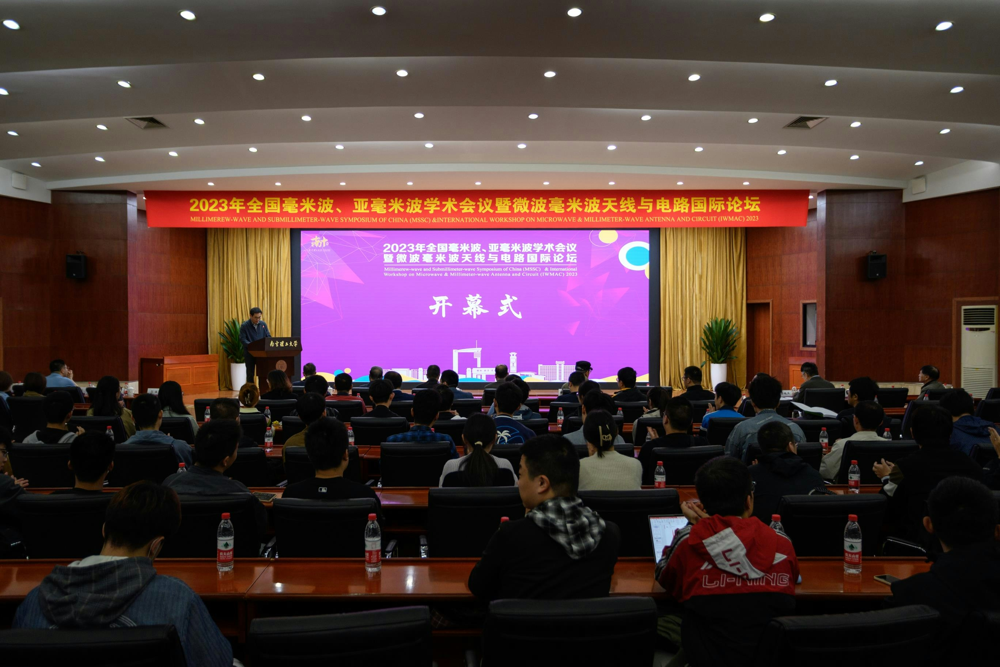

南京理工大学简介
南京理工大学是隶属于工业和信息化部的全国重点大学，学校由创 建于1953年的新中国军工科技最高学府中国人民解放军军事工程学 院 （简称"哈军工"）分建而成，经历了中国人民解放军炮兵工程学院、 华东工程学院、华东工学院等发展阶段，1993年更名为南京理工大 学。1995年，学校成为国家首批"211工程"重点建设高校；2000年 ，获批成立研究生院；2011年，获批建设"985工程优势学科创新平 台"；2017年，学校入选"双一流"建设高校，"兵器科学与技术"学科入 选"双一流"建设学科；2018年，王泽山院士获得国家最高科学技术奖 ，同年，学校成为工信部、教育部、江苏省共建高校。进入新时代、 开启新征程，学校坚持"以人为本，厚德博学"的办学理念，秉持"进德 修业，志道鼎新"的校训，弘扬"团结、献身、求是、创新"的校风，以 服务国家战略需求、推动社会进步为使命，为党育英才、为国铸利器 ，围绕陆海空天信融合发展，向特色鲜明世界一流大学的目标奋勇前进。

往届会议介绍
全国毫米波、亚毫米波会议2023简介
会议名称：全国毫米波、亚毫米波学术会议暨微波毫米波天线与电路国际论坛；
会议规模：200–300人；
投稿规模：105篇；
主办和承办单位：由中国电子学会微波分会主办，毫米波亚毫米波专业委员会、南京理工大学近程高速目标探测技术国防重点学科实验室、近程射频感知芯片与微系统教育部重点实验室、天线与微波技术重点实验室、《微波学报》编辑部等单位承办，南京师范大学、南京邮电大学、杭州电子科技大学绍兴集成电路研究院等单位协办。
赞助单位：天线与微波技术重点实验室、南京邮电大学、杭州电子科技大学绍兴集成电路研究院、上海普尚电子科技有限公司、深圳市通用测试系统有限公司、罗德与施瓦茨（中国）科技有限公司等
参会的国内单位有：中电14所、55所、29所，南京理工大学，杭州电子科技大学，南京师范大学，南京邮电大学，南京大学，东南大学，南京航空航天大学，西安电子科技大学，中国科学院新疆天文台，哈尔滨工业大学，电子科技大学，郑州大学，杭州电子科技大学绍兴集成电路研究院，中商用飞机有限责任公司上海飞机设计研究院，航天东方红卫星有限公司，国能铁路装备有限责任公司，长光集智光学科技有限公司等。
拟参会的外国专家：英国赫瑞瓦特大学的Hong Jiasheng教授，西班牙阿尔卡拉大学Roberto教授，加拿大蒙特利尔大学吴柯教授，新加坡国立大学郭永新教授等；专家均为IEEE Fellow；包括行业内国际顶级期刊的主编或副主编。
报到时间：会议报到时间：2023年10月27日，
会议时间：10月28日–10月29日；
会议形式：线下（国内）和线上（国外专家）相结合。
会议地点：南京（南京理工大学学术交流中心）
会议时间：10月28日–10月29日；
会议形式：线下（国内）和线上（国外专家）相结合。
会议地点：南京（南京理工大学学术交流中心）
